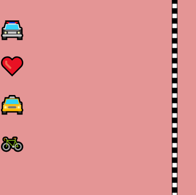
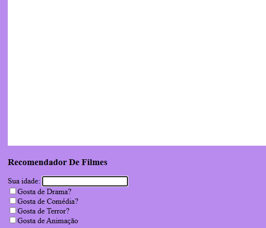
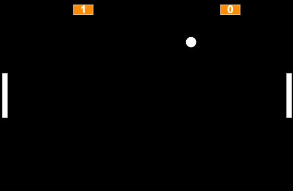

Meus Projetos

Corrida Pixelada
Este jogo de corrida foi desenvolvido utilizando a biblioteca P5.js, com base nos aprendizados adquiridos nas aulas da plataforma Alura. Com suporte para até 4 jogadores, oferece uma experiência divertida e dinâmica, ideal para desafiar os amigos em disputas eletrizantes pela vitória na pista!

Qual o Filme?
Este recomendador de filmes foi desenvolvido com a biblioteca P5.js, com base nos ensinamentos das aulas da plataforma Alura. Ele conta com uma aba interativa onde você informa sua idade e preferências, permitindo que as recomendações sejam personalizadas de forma precisa para o seu perfil. Uma forma divertida e prática de encontrar o filme ideal para o seu momento!

Pixel Pong
Este jogo de ping pong foi desenvolvido com a biblioteca P5.js, inspirado nas aulas da plataforma Alura. Permite partidas em dupla, contabiliza os pontos de cada jogador em tempo real e conta com trilha sonora para deixar as disputas ainda mais emocionantes. Uma experiência divertida e nostálgica diretamente no navegador!